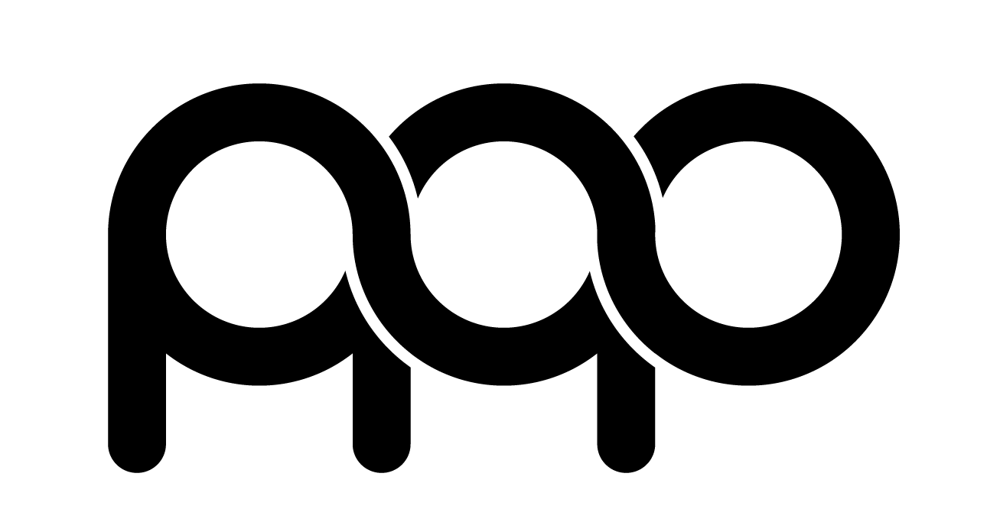

珍珠聯合會計師事務所
v2.2.0
專案矩陣
Task Focus 看板
管理分析
權限切換:
老闆 (Admin)
員工 (Staff)
專案總覽矩陣
點擊專案卡片可進入詳細客戶步驟控管進度表
新增專案
關閉細節
Task Focus 聚焦看板
呈現跨專案需處置之客戶與時程警告資訊
管理分析儀表板
即時檢視團隊工時統計、每日工時標籤與專案整體完成率
人員每日工時檢析
專案累積耗時與進度
客戶名稱
步驟名稱
00:00:00
未開始
•
無紀錄
開始執行
繼續執行
暫停執行
完成此步驟
標記為「無此步驟」
專案規格設定
專案名稱
週期類型
非固定週期
每月固定週期
雙月固定週期 (如營業稅)
每年固定週期
申報/完成截止日
標準作業步驟 (一行一步驟)
取消
儲存專案